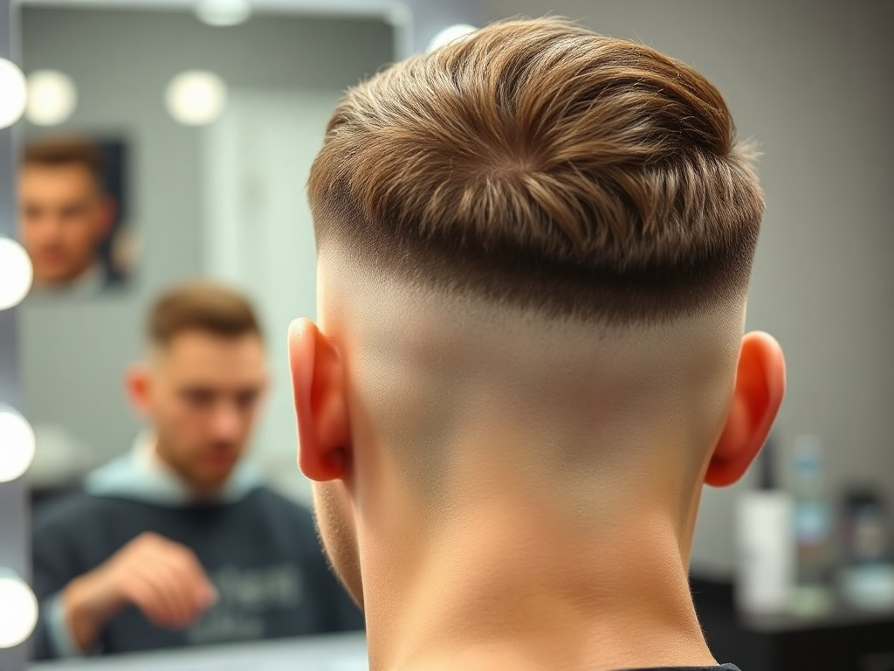
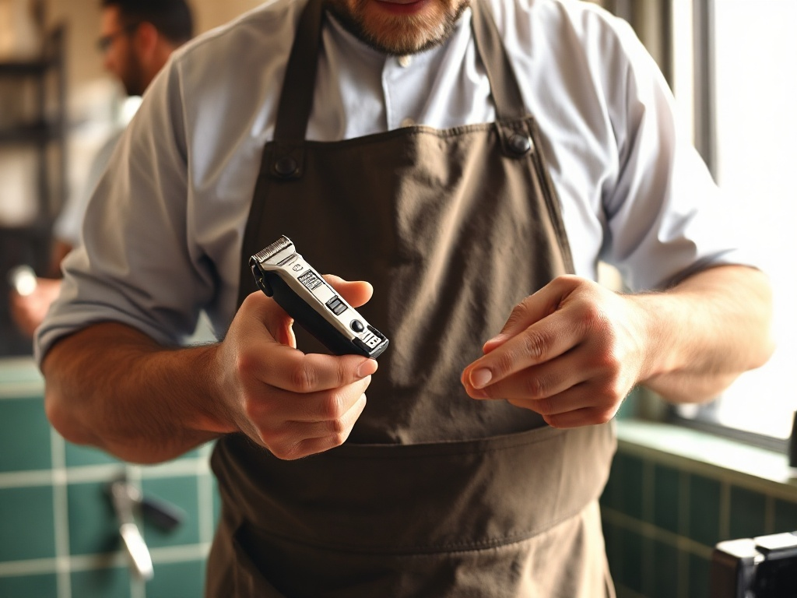
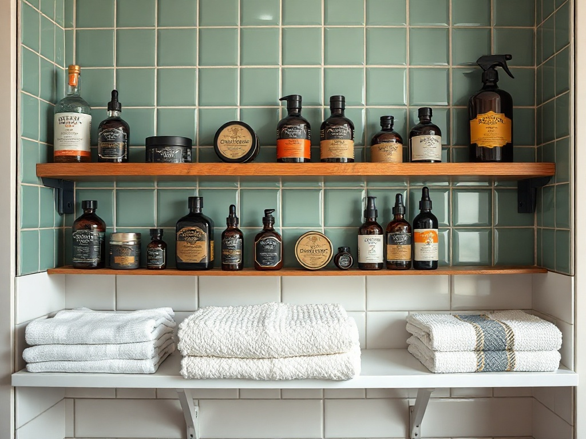
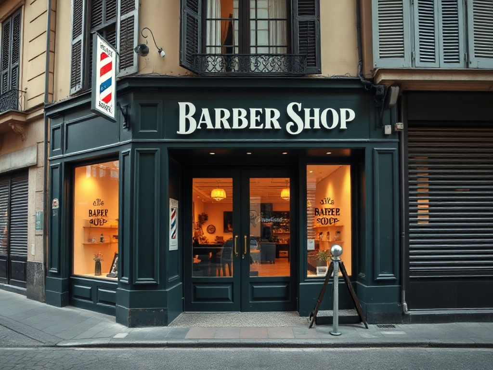

Mario Barber Shop
Fade di precisione, barba disegnata e la rasatura col rasoio a mano libera. Ora puoi vederli, scegliere il prezzo e fissare la tua poltrona — senza sperare che non ci sia coda.
Si apre il registro.
La prima poltrona è tua.
Fino a ieri, l'unico modo per sederti da Mario era passare e sperare. Da oggi il banco ha una pagina online: scegli il servizio, guarda il prezzo, e blocchi un orario preciso attorno alla tua giornata.
Prenota la tua poltrona
Un colpo di telefono e sei sul registro. Mario ti conferma l'orario e il barbiere.
+39 340 5567788- 1. Dicci il servizio — taglio, barba o rasoio a mano libera.
- 2. Scegli il giorno e la fascia oraria che preferisci.
- 3. Ricevi conferma. Ti aspettiamo alla poltrona, senza coda.
Il listino, riga per riga.
Nomi chiari, tempi onesti, prezzi in chiaro. Così scegli prima di sederti — e sai già cosa aspettarti quando lo specchio ti guarda.

- Taglio classicoForbici e macchinetta, lavaggio e finish. Il taglio di sempre, fatto bene. €22≈ 30 min
- Fade / Sfumatura di precisioneSfumatura pulita dal rasato al pieno, disegnata a mano sul tuo attaccatura. €26≈ 40 min
- Barba disegnataRifinitura, contorni netti e olio da barba. Forma studiata sul tuo viso. €15≈ 25 min
- Rasoio a mano libera & asciugamano caldoFirmaIl rito lento: panno caldo, lama a mano libera, dopobarba. Vedi il capitolo dedicato. €28≈ 40 min
- Taglio + BarbaIl completo: taglio su misura e barba disegnata nella stessa seduta. €35≈ 55 min
Prezzi e durate indicativi, pensati per farti scegliere in anticipo: Mario conferma il preventivo esatto in poltrona in base al servizio.
La lama passa una volta sola.
Qui non c'è il nastro trasportatore della catena. C'è l'asciugamano caldo che apre la pelle, la schiuma montata a pennello, e il rasoio a mano libera che segue la mascella con calma. È il gesto che ti fa uscire diverso.
- Panno caldo — prepara la pelle e ammorbidisce la barba prima della lama.
- Schiuma a pennello — montata al momento, non spray dalla bomboletta.
- Mano libera — rasatura precisa, contorni netti, zero fretta.
- Finish — dopobarba e panno freddo per chiudere i pori.

L'uomo dietro la poltrona.
Un barbiere di quartiere che le recensioni le ha guadagnate una testa alla volta. Mani ferme, occhio per la forma, e la testardaggine di rifare un contorno finché non è giusto.
"Un taglio finisce quando è giusto, non quando suona il timer."
Dove ti siedi.
Poltrone in fila davanti agli specchi, luce che entra dalla vetrina, gli scaffali dei prodotti a portata di mano. Sai già cosa trovi quando spingi la porta.

Trovaci a Milano.
Una vetrina verde pino e l'insegna dipinta a mano: quando la vedi, sei arrivato. Ecco come raggiungerci e gli orari con cui organizzarti.

Mario Barber Shop
Milano — a due passi dalle vie del centro. Indirizzo esatto in conferma quando prenoti.
- Lun
- Chiuso
- Mar – Ven
- 09:00 – 19:30
- Sab
- 09:00 – 18:00
- Dom
- Chiuso
Orari indicativi da confermare con la bottega.
Il voto se l'è guadagnato.
Il sentimento che torna più spesso nelle recensioni: fade puliti e contorni precisi, rifatti finché non sono giusti.Sintesi delle recensioni · non attribuita
E poi la calma del rasoio a mano libera con l'asciugamano caldo — il dettaglio che i clienti citano come la differenza dalle catene.Sintesi delle recensioni · non attribuita
Valutazione aggregata reale: 4,7/5 su 128 recensioni. Le frasi qui sopra riassumono il tono generale dei giudizi e non sono citazioni attribuite a singole persone. La distribuzione delle stelle è una stima illustrativa.
La prima volta da Mario.
Le domande che fai prima di prenotare, con risposte dirette — così niente ti frena dal fissare l'orario.
Serve prenotare o posso passare?
Puoi tentare il walk-in, ma la poltrona non è garantita. Una chiamata al +39 340 5567788 ti assicura l'orario e ti evita la coda: è il motivo per cui esiste questa pagina.
Quanto dura una rasatura col rasoio?
Il rito completo — asciugamano caldo, schiuma a pennello, lama a mano libera e finish — dura circa 40 minuti. Non è un servizio da fare di corsa, ed è proprio questo il punto.
Come si paga?
Si accettano carte e contanti direttamente in bottega. Nessun anticipo richiesto per prenotare al telefono.
Posso disdire o spostare l'appuntamento?
Sì. Ti chiediamo solo di avvisare con un po' di anticipo con una chiamata, così la poltrona resta libera per un altro cliente. La cancellazione è gratuita.
Fate anche solo la sistemata di barba?
Certo. La barba disegnata è un servizio a sé (contorni, rifinitura e olio), oppure la abbini al taglio nel pacchetto completo. Trovi tutto nel listino.
Si chiude il registro.
La tua poltrona ti aspetta.
Un colpo di telefono e sei sulla pagina di domani. Nessuna coda, nessuna attesa a caso.
+39 340 5567788